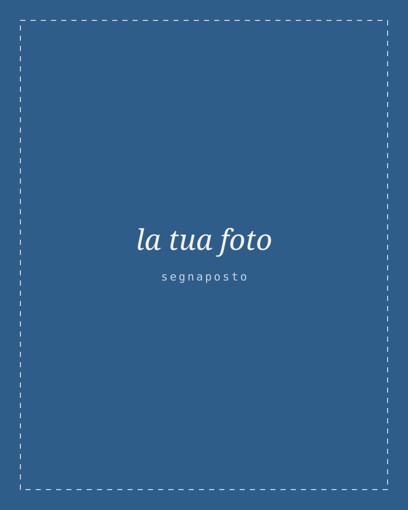

una rivista di _incontroluce
Sviluppi
la settimana in controluce
questa settimana ▸ n. 0

Il fuoco giusto
Julia Margaret Cameron, un pollaio a vetri e il primo successo di una fotografa che sbagliava apposta.
Sfoglia il numero
archivio ▸ tutti i numeri